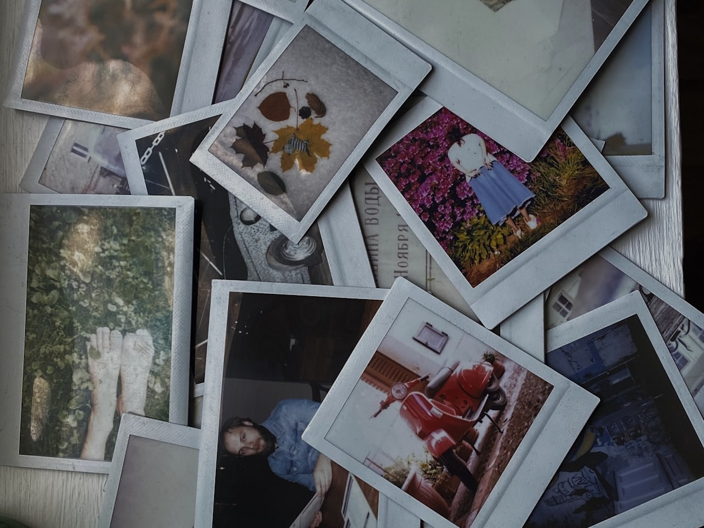
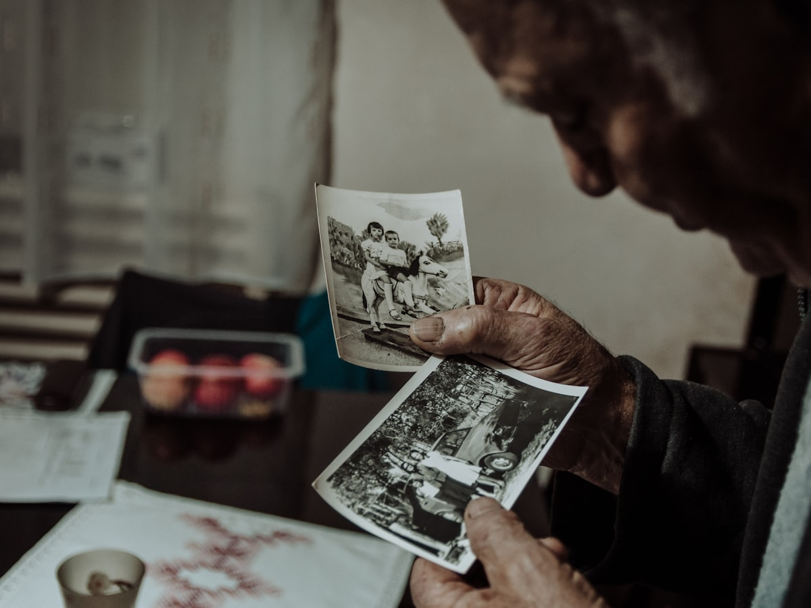

Windows and macOS · $20 once · No subscription
You capture the moments. Folio organizes the memories.
You take the photographs. Folio looks after the archive: reading it, proving what is in it, and changing nothing until you say so. The point is not tidier folders. The point is knowing your memories are safe, with evidence, and staying in charge of them.
- Pay once, own it
- Runs entirely on your PC
- Deletions go to the Recycle Bin
- Nothing moves without approval
Everything in its place.
Organize by date
Into year and month folders, in a destination you choose.
OpenFind duplicates
Files that are byte-for-byte identical. You decide what to keep.
OpenRename in bulk
Consistent names for many files at once, with a preview first.
OpenFour real figures. Three doors. No dashboard, no invented health score.
The problem
You don’t have a photo problem. You have an archive problem.
The photos are all still there, on the laptop, the old phone backup, two external drives and a memory card in a drawer. What is missing is an answer to the only question that matters: what can I safely tidy up, and what would I be losing?

Four drives, one collection
Folders inside folders, named New folder (3). Copies of copies. You cannot see the shape of it from Explorer, so you keep everything, forever, just in case.
“Is this one a duplicate, or a backup?”
Same name, same size, two drives. One is wasted space and one is the only thing standing between you and losing 2014. They look identical from the outside.

The cost of being wrong is permanent
A spreadsheet you delete twice can be rebuilt. Your daughter’s first birthday cannot. So the safest thing is to do nothing, and the mess quietly doubles every year.
Photographs Folio found and catalogued
A count it holds. Not an estimate, not a percentage.
Reclaimable, from copies proved identical
Quarantined copies are ready to reclaim. Until you reclaim them, Folio says they free nothing.
Photographs that exist in one copy only
The ones with no second copy anywhere. Worth knowing before you tidy anything.
Figures shown are from Folio’s own design canvas, standing in for a real library. Your numbers are your own.
How it works
You choose the source. Folio reads it.
Three steps, and nothing on your drives changes until you approve a plan.
Choose a source
Point Folio at a folder or a drive and it becomes a Folio library. Plug in a phone, camera or memory card and you can browse it without adding it to anything. Browsing costs nothing and changes nothing.
D:\Family Archive · C:\Users\you\Pictures · that drive in the drawer
Folio reads it
The scan only reads. It never changes, moves or deletes your files, and it can be paused and resumed. Folio records what each photograph actually is: its content, its capture date, its real identity. That is what lets it prove a claim later instead of guessing at one.
Big collections and drives that get unplugged do not send you back to the start.
Pick a task, see the plan, approve it
Organize by date, find duplicates, or rename in bulk. Folio writes the whole plan out first, every file, every destination, every copy it proposes to set aside, and shows you the consequences in plain language. Then it waits.
Approve it and Folio does the work, verifies every completed change against the plan, and reports what changed and what did not.
The gallery
You see photographs. Folio handles the filenames.
A wall of pictures with a filename under each one reads as a list of files that happens to have pictures. Folio is built the other way round: the tiles carry the photograph and nothing else. Names, paths, sizes and dates belong to a photograph you have opened. Try one.
Scale is a first-class control
S, M, L: contact sheet, normal, close reading. How large the pictures are drawn is the main decision on this page, so it is not buried in a menu.
The viewer covers the wall
Opening a photograph does not navigate away. Escape reads as putting a print back down, not as going back a page. Click any tile above and press Escape.
Video and photo, told apart
A clip and a photograph are indistinguishable as a still frame, so a clip carries one small badge. That is the only thing on a tile that is not the picture.
What it does
Three jobs. Each one writes the plan out before it touches anything.
Folio is deliberately not a suite of forty utilities sharing a window. It does a small number of things and it does them where you can watch.
Organize by date
Sort photographs into year and month folders using the date the photo was actually taken, not the date Windows happened to stamp on the file when it was last copied.
Arranging stays inside the source you chose. Nothing wanders off to another drive.
Find duplicates
Only byte-for-byte identical files are called duplicates. You choose which copy to keep, and what happens to the rest. The safe option is the one already selected.
Rename in bulk
Give a whole set of photographs names you will still understand in ten years. Extensions are preserved, the preview is mandatory, and renaming happens in place.
If a name would collide, Folio says so and offers to keep both. It does not silently overwrite.
The promise
Understand before you move. Verify before you remove.
Every other tool in this category asks you to trust it. Folio asks you to check it. The plan is written out in full, real filenames and real destinations, before a single byte moves. Watch it run.
Into D:\Family Archive, arranged by the date each photograph was taken. Same drive. Nothing is copied off it, and nothing is deleted.
6 of 12,480 shown. The full plan is scrollable, searchable and can be exported before you approve it.
“Changes require approval” sits in the status bar permanently, not as a warning that appears the moment something is about to happen. A promise you only see when you are already in danger is a warning, and people learn to click past warnings.
Six things Folio will not do to you
You keep the memories. Folio keeps the proof.
There is no such thing as a risk-free file operation, and Folio never claims one. What it offers instead is proof, recoverable steps, and a refusal to act when the conditions are not met.
Cleanup uses the Recycle Bin
When Folio removes something as part of a cleanup you approved, it goes to the Windows Recycle Bin. There is no silent permanent delete.
Quarantine before removal
Duplicate copies are moved to a .Folio folder on the same drive, where you can put them back. Until you explicitly reclaim, Folio tells you it has freed nothing.
A matching name proves nothing
Two files called IMG_4821.CR2 are not duplicates because they share a name. Folio compares content, and says likely until it has verified, verified after.
Your backups stay backups
A second copy on a different physical drive can be a deliberate backup, and Folio treats it as one rather than as garbage. You can mark copies as protected, and it respects that.
It reports what actually happened
An operation that has not been verified is never reported as finished. If a job is interrupted, Folio says precisely what completed, what did not, and what to do next.
Unplugging a drive is not a disaster
Large collections and drives that come and go are the normal case, not an error state. Work resumes where it stopped instead of starting from zero.
Local-first
Local only.
Nothing is uploaded.
Folio is a desktop application that reads the drives you nominate and writes its catalog to your own PC. Your photographs are not copied to a server, not scanned in a cloud, and not used to train anything. There is no sync queue quietly working in the background while you sleep.
- Works with the internet off
- No cloud storage bill, ever
- Your files stay in your folders
And the thing most tools will not tell you: Folio’s catalog is not a backup. It helps you understand your archive. Keeping a real second copy is still your job, and Folio is built to help you keep one rather than to talk you out of it.
Where it fits
Not cloud storage. Not another cleaner.
Folio does not compete with the place your photos are stored. It competes with the afternoon you keep not spending on this.
| Feature | Folio | Cloud photo subscription | Generic duplicate cleaner |
|---|---|---|---|
| What it costs | $20, once | Roughly $2 to $10 a month, for as long as you want your photos | Often free, or a yearly “PC utilities” bundle |
| Where your photos live | On your own drives, in your own folders | On someone else’s servers, in their format | Wherever they already are |
| How duplicates are judged | Byte-for-byte identical content, verified | Usually not its job | Frequently name, size and date, which is a guess |
| Before anything changes | The complete plan, every file and destination, then your approval | Sync happens continuously, by design | A checkbox list and a Clean button |
| Backup copies on another drive | Recognized as possibly deliberate, and protectable | Not modelled | Usually counted as waste to be deleted |
| If you stop paying | Nothing happens. You already own it. | Storage is reduced, and you have to move everything | Varies |
| Works offline | Entirely | No | Usually |
Comparison describes categories of product, not any specific vendor. Subscription prices are typical consumer plans and change often, so check current pricing yourself.
What comes next
Two things are being built. Neither one is on this invoice.
Folio has four pillars. Three of them ship today. This is the fourth, and the second platform.
Import from phone and camera
A plugged-in phone or camera is a connected source, not automatically a Folio library. Browsing it costs nothing and changes nothing. When the transfer flow lands, copy is the default and the destination is verified before anything is freed. An interrupted transfer will report items copied and verified, awaiting source removal rather than pretending they are finished.
Folio for macOS
The same Rust engine underneath, a native Mac interface on top. Shared media intelligence, platform-specific transport. That boundary was drawn on day one precisely so a Mac client would not need an architectural rewrite.
Your $20 licence already covers it. When it ships, it is yours at no extra cost.
Windows is what you get today. Both of these are in development and neither has a release date. Nothing on this page charges you for something that is not built yet.
Pricing
One price. One payment. Yours.
About the cost of two months of cloud storage you were going to pay forever anyway.
USD, once. Not per month. Not per year. Not per photo.
Get FolioSecure checkout · instant license key · refund within 14 days
- Folio for Windows 11 and Windows 10 (64-bit)
- Folio for macOS when it ships, at no extra cost
- Up to 3 of your personal devices
- All version 1 updates included, free
- Unlimited photos, unlimited drives. No per-gigabyte or per-file limits
- No account required to use the app
- Works completely offline
- Refund within 14 days if it does not do what this page says
Windows 10 or 11, 64-bit, is what ships today, and Folio reads only the folders and drives you nominate. Folio for macOS is in development with no release date; your licence already covers it, so you will not be asked to pay again. Connected-device transfer is also in development. Price is in US dollars and your bank may add a conversion fee.
Buying for a team, a studio, or a family that shares one archive? Get in touch and we will sort something out.
Questions
The ones worth asking before you trust software with your memories.
Is Folio really going to delete my photos?
Not without you reading a plan and pressing a button, and not permanently by accident. Analysis is read-only. Cleanup you approve uses the Windows Recycle Bin. Duplicate copies are quarantined into a .Folio folder on the same drive first, where you can put them back.
There is exactly one path to permanent removal: an option clearly labelled as permanent, with no undo, which is never the pre-selected choice.
How does Folio decide two photos are the same?
By comparing what is actually inside the files. Two photographs are only called duplicates when they are byte-for-byte identical. A shared filename, a matching file size or the same timestamp is a hint, never proof, and Folio does not present hints as proof.
Before content has been verified Folio says likely. It says verified only afterwards.
I keep a copy of everything on a backup drive. Will Folio wipe it?
No. Identical content does not prove a copy is unwanted, and a copy on a different physical drive may be exactly the backup you intended. Folio distinguishes copies by the volume they sit on, lets you mark copies as protected, and will not treat a protected copy as waste.
Worth being precise about one thing: marking something as protected records your intention. It is not evidence that a backup has been made or checked. Folio will not claim otherwise.
Does anything get uploaded?
No. Folio is local-first. It reads the folders and drives you nominate and keeps its catalog on your own PC. It works with the internet switched off.
What about RAW files and videos?
Both are catalogued alongside your JPEGs. RAW files such as .CR2 keep their extension through every rename, and clips appear in the gallery with a small badge so a video is not mistaken for a still frame.
Is there a Mac version?
It is in development, and your licence already covers it. Folio is a native Windows application today. The Rust engine underneath was deliberately built to be shared, and macOS is the next platform.
Being straight with you: there is no release date. If you are buying today, buy it for the Windows application. The Mac build arriving later at no extra cost is a bonus, not the thing you are paying for.
Can it pull photos off my iPhone or Android phone?
Not in today’s build. Connected-device transfer is designed and being built, and it is described on this page as direction rather than delivery. Your $20 buys what ships today plus every version 1 update, so if it lands in version 1, you get it.
How many computers can I install it on?
Up to 3 devices that you personally use, across Windows and macOS. A desktop and a laptop and the machine in the studio is fine. It is one licence for one person, not a site licence for an office.
What happens if I unplug a drive halfway through a job?
Folio stops, keeps everything that genuinely finished, and tells you what did not. It will not report an unverified operation as complete, and it will not make you start the scan again from the beginning when the drive comes back.
What is the refund policy?
14 days. If Folio does not do what this page says it does, email us and we will refund you. You do not have to argue the case.
Get Folio
You already took the photographs. Let Folio do the rest.
Twenty dollars, once, for the afternoon you finally stop dreading. And for every time afterwards, as the collection keeps growing, when you want to know exactly what you have and exactly what is about to change.
- Windows today
- macOS included when it ships
- Refund within 14 days